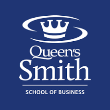

Matthew Neufeld
a developer

Education
Queen's University - Bachelor of Computing - Computer Science Specialization
Degree awarded with distinction
Dean's Honour List 2017 - 2021, 3.82 GPA Overall
Relevant Topics: Artificial Intelligence, Algorithms, Graphics, Operating Systems, Data Structures, Formal Methods
Queen's University - Smith School of Business - Certificate of Business
Relevant Topics: Financial & Management Accounting, Marketing, Organizational Behaviour, Business Fundamentals
Skills & Tools
Coding
Since I began programming in highschool, I have experienced working with a wide range of languages and tools.
The languages I have achieved a high level of proficiency with are Python and Java.
Some other languages or tools I have worked with over time are the following: SQL, Bash, Haskell, Prolog, HTML, CSS, Power BI and Excel.


Business
Through a combination of the Business certificate I earned from the Smith School of Business and my work experience, I have gained a wealth of business knowledge.
Understanding the business/user perspective on projects top allows me to meet requirements both more accurately and effectively.
Interpersonal
I have developed excellent interpersonal skills through both working with peers during university as well as with co-workers.
Being able to clearly and concisely convey ideas as well as being able to work well with others are vital skills to have.
Filler.

Work Experience
Junior Data Analyst - Neufeld Medicine:September 2019 - Present (Part time) |
Developed patient instruction & guideline packages that increased compliance by 30% in the first 6 months after implementation. Provided analysis on the successfulness of surgery based on whether or not the patient underwent an IOL Master test. |
|---|---|
Dockhand(Maintenance) - City of Kingston:April 2019 - August 2019 (Seasonal) |
Responsible for general maintenance around the city's recreational facilities. Assisted in creating temporary walkways and docks during flooding due to high water levels. Provided boat refueling, docking and other services to visitors at several harbours. |
Student Lock Operator - Parks Canada:June 2016 - September 2018 (Seasonal) |
Closely coordinated with co-workers to load and unload 200+ boats per day on the marine railroad. Performed routine maintenance in and around the lock. |
Contact Me
mattneufeld11@gmail.com